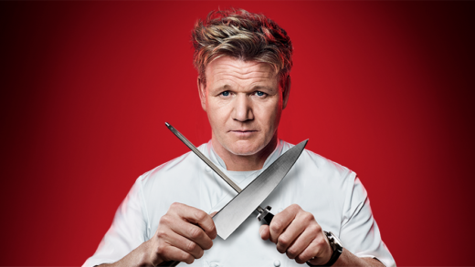

Master Chef I Follow
Master Chef Gordon Ramsey
Gordon Ramsey is one of Scottish chef who is also know as the great restaurateur, writer and footballer. He is one of the well-known master chefs of the world. He has many established and Michelin rated restaurant all from France till united states. He ran many foods reality show like Kitchen Hell, Kitchen Nightmare, F-word, etc. In order reach to this position he has a lot of hard work and devoted himself in the world of food. However, this description is not enough for his Biography here is the link of the YouTube video.https://www.youtube.com/watch?v=pLbvb6LWvsg
Why I like him
The main reason why I like Gordon Ramsey is because he is very hard working and passionate chef, his position now as MasterChef is because of that devotion in the work. He is straight forward in kitchen; he does not want any wrong thing to happen in the kitchen. I really like the way how he cooks the foods and recipes of the food.